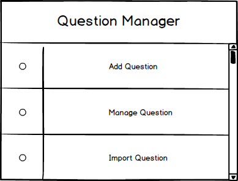

2.2. Question Manager
This is the popup that appears to the scree after the user logs in to his/her account (Figure 1). The popup provides the user with the option to either add, manage, or import questions.

Figure 1: Question Manager popup.
Clicking on each of the options of the popup, the application redirects the user to a corresponding page, allowing him/her to perform the desired action:
Prev: ui-overview
| Next: test-manager
| Up: functional
| Top: index